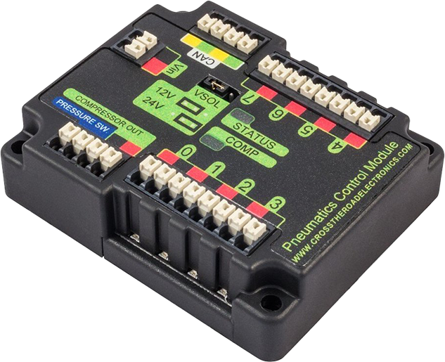

Operating pneumatic cylinders
Using the FRC Control System to control Pneumatics
There are two options for operating solenoids to control pneumatic cylinders, the CTRE Pneumatics Control Module and the REV Robotics Pneumatics Hub.
{kind=link}
The CTRE Pneumatics Control Module (PCM) is a CAN-based device that provides control over the compressor and up to 8 solenoids per module.
{kind=link}
The REV Pneumatic Hub (PH) is a CAN-based device that provides control over the compressor and up to 16 solenoids per module.
These devices are integrated into WPILib through a series of classes that make them simple to use. The closed loop control of the Compressor and Pressure switch is handled by the PCM hardware and the Solenoids are handled by the Solenoid class that controls the solenoid channels.
These modules are responsible for regulating the robot’s pressure using a pressure switch and a compressor and switching solenoids on and off. They communicate with the roboRIO over CAN. For more information, see Hardware Component Overview
Module Numbers
CAN Devices are identified by their Node ID. The default Node ID for PCMs is 0. The default Node ID for PHs is 1. If using a single module on the bus it is recommended to leave it at the default Node ID. Additional modules can be used where the modules corresponding solenoids are differentiated by the module number in the constructors of the Solenoid and Compressor classes.
Generating and Storing Pressure
Pressure is created using a pneumatic compressor and stored in pneumatic tanks. The compressor doesn’t necessarily have to be on the robot, but must be powered by the robot’s pneumatics module. The “Closed Loop” mode on the Compressor is enabled by default, and it is not recommended that teams change this setting. When closed loop control is enabled the pneumatic module will automatically turn the compressor on when the digital pressure switch is closed (below the pressure threshold) and turn it off when the pressure switch is open (~120PSI). When closed loop control is disabled the compressor will not be turned on. Using the Compressor (Java / C++) class, users can query the status of the compressor. The state (currently on or off), pressure switch state, and compressor current can all be queried from the Compressor object.
Note
The Compressor object is only needed if you want the ability to turn off the compressor, change the pressure sensor (PH only), or query compressor status.
Compressor pcmCompressor = new Compressor(0, PneumaticsModuleType.CTREPCM);
Compressor phCompressor = new Compressor(1, PneumaticsModuleType.REVPH);
pcmCompressor.enableDigital();
pcmCompressor.disable();
boolean enabled = pcmCompressor.enabled();
boolean pressureSwitch = pcmCompressor.getPressureSwitchValue();
double current = pcmCompressor.getCompressorCurrent();
frc::Compressor pcmCompressor{0, frc::PneumaticsModuleType::CTREPCM};
frc::Compressor phCompressor{1, frc::PneumaticsModuleType::REVPH};
pcmCompressor.EnableDigital();
pcmCompressor.Disable();
bool enabled = pcmCompressor.Enabled();
bool pressureSwitch = pcmCompressor.GetPressureSwitchValue();
double current = pcmCompressor.GetCompressorCurrent();
The Pneumatic Hub also has methods for enabling compressor control using the REV Analog Pressure Sensor (enableAnalog method).
Solenoid Control
FRC teams can use a solenoid valve as part of performing a variety of tasks, including shifting gearboxes and moving robot mechanisms. A solenoid valve is used to electronically switch a pressurized air line “on” or “off”. Solenoids are controlled by a robot’s Pneumatics Control Module, or Pneumatic Hub, which is in turn connected to the robot’s roboRIO via CAN. The easiest way to see a solenoid’s state is via the LEDs on the PCM or PH (which indicates if the valve is “on” or not). When un-powered, solenoids can be manually actuated with the small button on the valve body.
Single acting solenoids apply or vent pressure from a single output port. They are typically used either when an external force will provide the return action of the cylinder (spring, gravity, separate mechanism) or in pairs to act as a double solenoid. A double solenoid switches air flow between two output ports (many also have a center position where neither output is vented or connected to the input). Double solenoid valves are commonly used when you wish to control both the extend and retract actions of a cylinder using air pressure. Double solenoid valves have two electrical inputs which connect back to two separate channels on the solenoid breakout.
Single Solenoids in WPILib
Single solenoids in WPILib are controlled using the Solenoid class (Java / C++). To construct a Solenoid object, simply pass the desired port number (assumes default CAN ID) and pneumatics module type or CAN ID, pneumatics module type, and port number to the constructor. To set the value of the solenoid call set(true) to enable or set(false) to disable the solenoid output.
Solenoid exampleSolenoidPCM = new Solenoid(PneumaticsModuleType.CTREPCM, 1);
Solenoid exampleSolenoidPH = new Solenoid(PneumaticsModuleType.REVPH, 1);
exampleSolenoidPCM.set(true);
exampleSolenoidPCM.set(false);
frc::Solenoid exampleSolenoidPCM{frc::PneumaticsModuleType::CTREPCM, 1};
frc::Solenoid exampleSolenoidPH{frc::PneumaticsModuleType::REVPH, 1};
exampleSolenoidPCM.Set(true);
exampleSolenoidPCM.Set(false);
Double Solenoids in WPILib
Double solenoids are controlled by the DoubleSolenoid class in WPILib (Java / C++). These are constructed similarly to the single solenoid but there are now two port numbers to pass to the constructor, a forward channel (first) and a reverse channel (second). The state of the valve can then be set to kOff (neither output activated), kForward (forward channel enabled) or kReverse (reverse channel enabled). Additionally, the CAN ID can be passed to the DoubleSolenoid if teams have a non-standard CAN ID.
// Using "import static an.enum.or.constants.inner.class.*;" helps reduce verbosity
// this replaces "DoubleSolenoid.Value.kForward" with just kForward
// further reading is available at https://www.geeksforgeeks.org/static-import-java/
import static edu.wpi.first.wpilibj.DoubleSolenoid.Value.*;
DoubleSolenoid exampleDoublePCM = new DoubleSolenoid(PneumaticsModuleType.CTREPCM, 1, 2);
DoubleSolenoid exampleDoublePH = new DoubleSolenoid(9, PneumaticsModuleType.REVPH, 4, 5);
exampleDoublePCM.set(kOff);
exampleDoublePCM.set(kForward);
exampleDoublePCM.set(kReverse);
frc::DoubleSolenoid exampleDoublePCM{frc::PneumaticsModuleType::CTREPCM, 1, 2};
frc::DoubleSolenoid exampleDoublePH{9, frc::PneumaticsModuleType::REVPH, 4, 5};
exampleDoublePCM.Set(frc::DoubleSolenoid::Value::kOff);
exampleDoublePCM.Set(frc::DoubleSolenoid::Value::kForward);
exampleDoublePCM.Set(frc::DoubleSolenoid::Value::kReverse);
Toggling Solenoids
Solenoids can be switched from one output to the other (known as toggling) by using the .toggle() method.
Note
Since a DoubleSolenoid defaults to off, you will have to set it before it can be toggled.
Solenoid exampleSingle = new Solenoid(PneumaticsModuleType.CTREPCM, 0);
DoubleSolenoid exampleDouble = new DoubleSolenoid(PneumaticsModuleType.CTREPCM, 1, 2);
// Initialize the DoubleSolenoid so it knows where to start. Not required for single solenoids.
exampleDouble.set(kReverse);
if (m_controller.getYButtonPressed()) {
exampleSingle.toggle();
exampleDouble.toggle();
}
frc::Solenoid exampleSingle{frc::PneumaticsModuleType::CTREPCM, 0};
frc::DoubleSolenoid exampleDouble{frc::PneumaticsModuleType::CTREPCM, 1, 2};
// Initialize the DoubleSolenoid so it knows where to start. Not required for single solenoids.
exampleDouble.Set(frc::DoubleSolenoid::Value::kReverse);
if (m_controller.GetYButtonPressed()) {
exampleSingle.Toggle();
exampleDouble.Toggle();
}
Pressure Transducers
A pressure transducer is a sensor where analog voltage is proportial to the measured pressure.
Pneumatic Hub
The Pneumatic Hub has analog inputs that may be used to read a pressure transducer using the Compressor class.
Compressor phCompressor = new Compressor(1, PneumaticsModuleType.REVPH);
double current = phCompressor.getPressure();
#include <units/pressure.h>
frc::Compressor phCompressor{1, frc::PneumaticsModuleType::REVPH};
units::pounds_per_square_inch_t current = phCompressor.GetPressure();
roboRIO
A pressure transducer can be connected to the Analog Input ports on the roboRIO, and can be read by the AnalogInput or AnalogPotentiometer classes in WPILib.
import edu.wpi.first.wpilibj.AnalogInput;
import edu.wpi.first.wpilibj.AnalogPotentiometer;
// product-specific voltage->pressure conversion, see product manual
// in this case, 250(V/5)-25
// the scale parameter in the AnalogPotentiometer constructor is scaled from 1 instead of 5,
// so if r is the raw AnalogPotentiometer output, the pressure is 250r-25
double scale = 250, offset = -25;
AnalogPotentiometer pressureTransducer = new AnalogPotentiometer(/* the AnalogIn port*/ 2, scale, offset);
// scaled values in psi units
double psi = pressureTransducer.get();
// product-specific voltage->pressure conversion, see product manual
// in this case, 250(V/5)-25
// the scale parameter in the AnalogPotentiometer constructor is scaled from 1 instead of 5,
// so if r is the raw AnalogPotentiometer output, the pressure is 250r-25
double scale = 250, offset = -25;
frc::AnalogPotentiometer pressureTransducer{/* the AnalogIn port*/ 2, scale, offset};
// scaled values in psi units
double psi = pressureTransducer.Get();